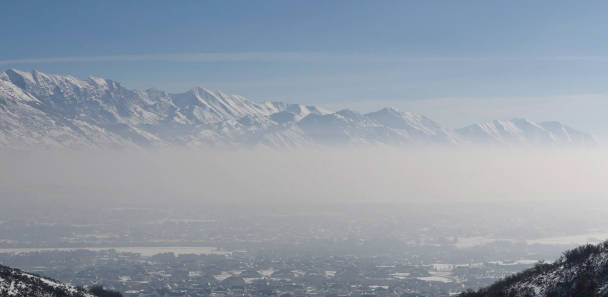
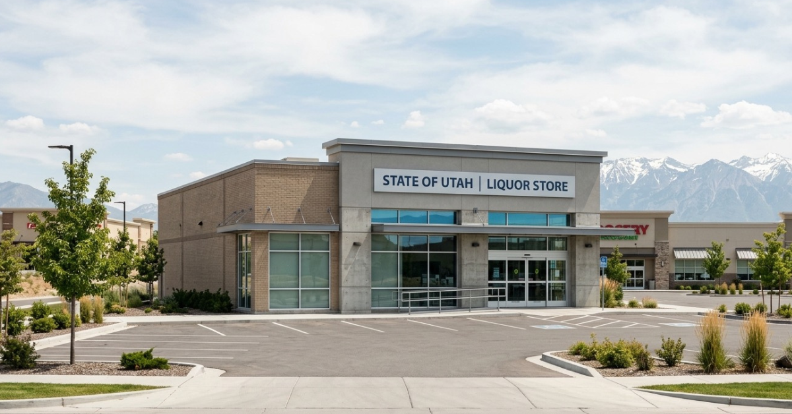
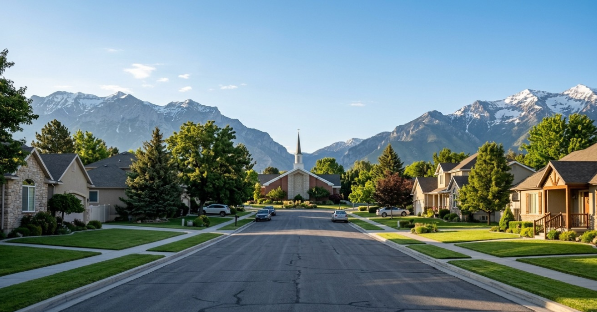
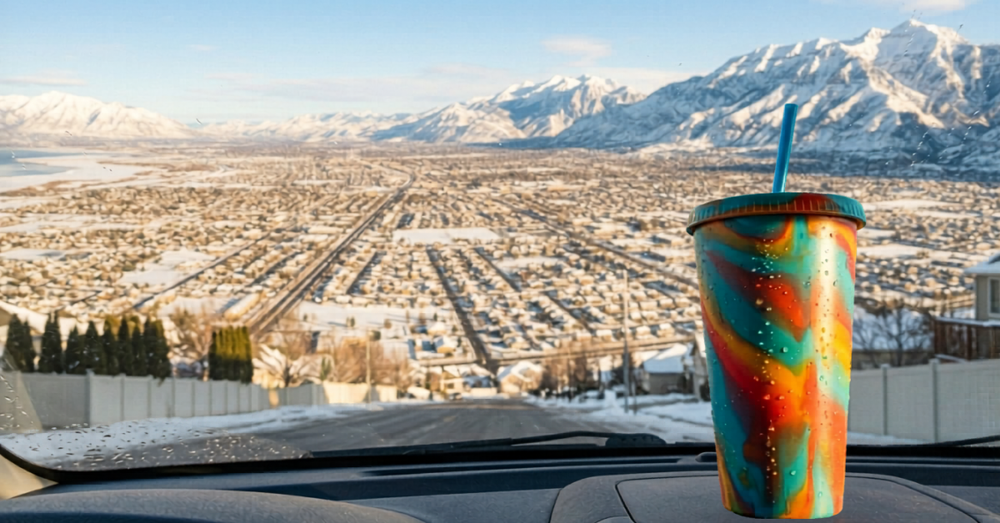

In much of Utah County, homes receive two separate water bills every month and new residents are reliably confused by this the first time it happens. This is standard in cities with citywide pressurized irrigation systems, including Lehi, Saratoga Springs, Highland, American Fork, Pleasant Grove, Alpine, Salem, Springville, and Santaquin. Some areas, including many older neighborhoods, stay on a single culinary bill, so check your specific address on the state's secondary water map at secondarywatersafety.utah.gov. Here is what is actually going on. Your culinary water bill covers treated drinking water, the water that comes out of your kitchen tap and shower. Your secondary water bill covers untreated irrigation water delivered through a separate underground system specifically for watering your lawn and garden. Secondary water is drawn from rivers, reservoirs, and canals. It is not safe to drink but it is perfectly fine for your sprinklers and it costs significantly less than culinary water. Most secondary water systems run seasonally from approximately mid-April through mid-October. Some cities charge a flat monthly fee during that season, others are moving to metered systems. Either way budget for both bills. It is not a mistake when two envelopes show up.
Local Tip
Secondary water is why Utah County lawns stay green all summer without the water bills you might expect. It is one of the genuinely smart infrastructure decisions Utah made decades ago.

Winter inversion sitting over Utah Valley. Clear sky above, trapped air below.
Every winter Utah County experiences temperature inversions. Cold air settles into the valley floor and gets trapped under a layer of warmer air above it. When that happens, vehicle emissions, wood smoke, and other pollutants have nowhere to go. They build up. The air turns gray and hazy and on bad days you can see the pollution layer sitting below the mountain peaks like a blanket. Utah County generally gets less severe inversion conditions than Salt Lake County because the valley is more open to the south, giving pollution more room to disperse. But it still happens and it is worth knowing about before your first January here. A typical winter has around five to six multi-day inversion events. Most last a few days until a storm comes through and clears the air. If you or anyone in your family has asthma or respiratory sensitivities, download the Utah Air app before you arrive. It gives you real-time air quality readings and forecasts.
Local Tip
The mountains above the inversion layer are always clear. One of the stranger experiences of Utah County life is driving up a canyon on a bad air day and breaking through the haze into perfectly clean air a thousand feet above the valley. It is genuinely surreal.
Altitude
Utah County sits between 4,500 and 5,000 feet above sea level. If you are coming from a low-elevation area, your body will notice. The first few weeks you may feel more winded than usual during exercise, get headaches, or feel more tired than expected. This is normal and it passes within a few weeks as your body adjusts. Drink significantly more water than you think you need. Alcohol hits harder at altitude. Baked goods rise differently and most recipes need adjustments. Coffee and other hot liquids boil at a lower temperature which means your coffee maker may need adjustment if you are picky about brew temperature.
Dry Air
Utah is a high desert. The humidity regularly drops below 20 percent in the winter and even lower in summer. Your skin will feel it, your sinuses will feel it, and your hardwood floors and wood furniture will feel it as the moisture leaves them. Invest in a whole-home humidifier before your first winter. It makes a meaningful difference. Nosebleeds are common for newcomers, especially kids, in the first few weeks. Keep saline spray around. Lip balm becomes a daily necessity. The upside: the dry cold feels significantly less bitter than humid cold at the same temperature. A 20-degree day in Utah feels nothing like a 20-degree day somewhere humid.

Utah has a unique relationship with alcohol and if you are used to grabbing a bottle of wine at the grocery store you will need to adjust your habits. Beer, wine, and spirits are sold at state-run DABC stores, the Utah Department of Alcoholic Beverage Control. These are separate from grocery stores and pharmacies. Grocery stores and convenience stores sell beer but with an alcohol content limit. Restaurants serve alcohol but the rules around how it is served have historically been unusual. The so-called Zion Curtain required bartenders to prepare drinks behind a partition, though most of those restrictions have been loosened in recent years. If you enjoy wine with dinner at home, find your nearest DABC store early. They are well-stocked and the staff are knowledgeable.
Local Tip
DABC stores are closed on Sundays in most cities. If you are planning a gathering for the weekend, shop on Saturday. This catches people off guard more than any other alcohol law here.
Utah celebrates Pioneer Day on July 24th to commemorate the day in 1847 when Brigham Young and the first Mormon pioneers entered the Salt Lake Valley. It is a state holiday, which means government offices, many businesses, and some schools treat it like any other major holiday. Parades, fireworks, and community events happen across Utah County. Steel Days in American Fork overlaps with this period and the whole mid-July to late July stretch is one of the most active community event weeks of the year. If you arrive in July, do not be surprised when things feel quieter than a normal Wednesday because it is not a normal Wednesday to most people here.
Local Tip
The Provo Freedom Festival on July 4th and Pioneer Day on July 24th mean Utah County basically has two major fireworks holidays within three weeks of each other. Plan accordingly if you have pets or kids who are sensitive to noise.

Sunday in Utah County is different from Sunday in most other places. A significant portion of the population observes the Sabbath, which means you will notice visibly less traffic, quieter neighborhoods, and some businesses with reduced hours or closed entirely on Sundays. Highland is the most notable example. The city has an ordinance requiring most businesses to close on Sundays and residents have repeatedly voted to keep it. This is not universal across Utah County. Most national chains, restaurants, and retail stores in Lehi, Orem, Provo, and other cities operate normally on Sundays. But if you are in a more residential part of the county on a Sunday morning, the quiet is real and some people find it one of the most appealing things about living here.
Local Tip
If you are not LDS, Sunday is honestly a great day to run errands, hit the trails, or visit restaurants that are open. They are noticeably less crowded than Saturday.
Utah has a thriving specialty soda culture that surprises almost everyone who moves here. Swig, Sodalicious, and dozens of independent drink shops serve enormous customized sodas with flavored syrups, cream, and fruit combinations that have nothing to do with a fountain Coke at a gas station. This culture grew up in part because the LDS community does not drink alcohol, coffee, or tea, so the elaborate specialty drink became the social ritual that a coffee shop or bar would fill elsewhere. The lines at Swig on a Saturday morning are real. People have regular orders they have been refining for years. If you have never had a dirty Dr Pepper with coconut syrup and fresh lime, you have not fully arrived in Utah County.

Local Tip
Try it before you judge it. Order the house special at whichever shop is closest to your new neighborhood. This is one of those things that sounds odd until you are standing in line every Tuesday morning with everyone else.
This one is worth knowing before your first week. In most parts of the country using expressions like "oh my God" or "Jesus Christ" casually is unremarkable. In Utah County, with its large LDS population, using the Lord's name in that way is considered genuinely offensive, not just mildly impolite but a real cultural transgression. You will not be lectured about it publicly in most cases but you will be noticed and it will affect first impressions. This is not about religion. It is about cultural fluency. Knowing the local norms before you arrive is part of landing well in a new place. No different than learning that you take your shoes off at the door in certain households or that you do not discuss politics at the dinner table in others.
Local Tip
Utah County is genuinely welcoming to newcomers from everywhere. The adjustment is easier than people expect when they come in with curiosity rather than comparison.
I have lived this. Moved away, came back by choice, and have helped a lot of people land well in Utah County. If you have questions about what life actually looks like here, reach out.
Talk to Kelsie.